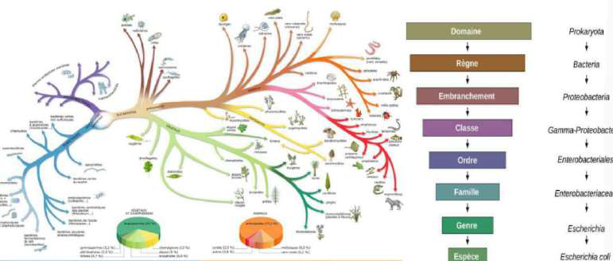
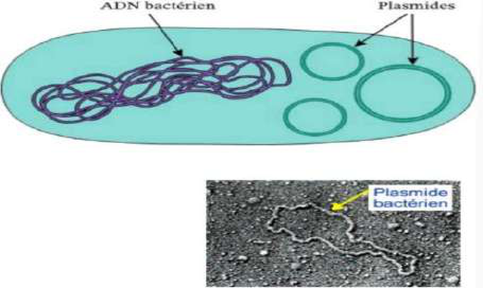
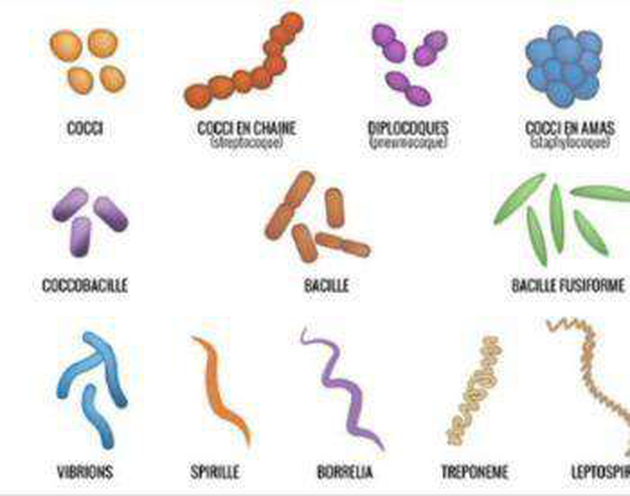

UE3 — Introduction à la microbiologie / bactériologie (DFGSM3)
D'après le cours du Pr Brigitte Lamy (Bactériologie, cours n°1, 27/05/2026), Ronéo n°1. Pivots : piège / point clé · diagnostic · seuil / repère. Figures du cours intégrées.
🎯 Objectifs : distinguer eucaryote / procaryote ; distinguer champignon / virus / bactérie ; connaître les morphologies bactériennes (+++) ; distinguer colonisation vs infection ; connaître les flores naturelles.
Partie 1 · Cadre conceptuel
1 · Micro-organismes & agents infectieux
Micro-organisme = organisme vivant avec son propre matériel génétique + un métabolisme, capable de vivre indépendamment. (Une bactérie est ~10× plus petite qu'un PNN.)
Un virus n'est PAS un organisme : pas de métabolisme autonome, il a besoin d'une cellule. Un hépatocyte non plus (pas indépendant).
Catégorie
Agents (du + gros au + petit)
Type cellulaire
Organismes vivants (métabolisme propre)
Parasites complexes & protozoaires
Eucaryote
Champignons
Eucaryote
Bactéries
Procaryote
Parasites moléculaires (pas de métabolisme seul)
Virus, viroïdes, prions
Acellulaire (capside pour virus/viroïdes)
🔑 Bactérie vs parasite unicellulaire (amibe) : l'amibe a un noyau (eucaryote), la bactérie n'en a pas (procaryote).

Diversité & parenté bactérienne — l'arbre phylogénétique repose sur les génomes (séquençage de l'ARN ribosomique = méthode actuelle) ; seule une petite partie des bactéries est pathogène pour l'Homme.
2 · La maladie infectieuse & sa classification
Modes de transmission
Interhumaine : salive, aérosols, sexuelle (N. gonorrhoeae), transplacentaire (Listeria).
Environnement : nourriture, eau (orale/transcutanée) ; vecteurs (Lyme) ; nosocomiale (associée aux soins — > 48 h après l'admission).
📊 Mortalité infectieuse mondiale (≈ 17 M/an) : infections respiratoires 3,5 M (1re) > SIDA 2,5 M > diarrhées 2,2 M > tuberculose 1,5 M > paludisme 1,1 M > rougeole 0,9 M.
Comment classe-t-on les bactéries ?
Systématique / taxonomie : règne → embranchement → classe → ordre → famille → genre → espèce (en médecine on retient genre + espèce).
Invasion d'un tissu par un agent pathogène → dommages + activation immunitaire (agression → défense).
Commensal
Ne fait pas d'infection, vit en harmonie (neutralise/évite le système immunitaire), pas de réaction de défense.
Pouvoir pathogène (pathogénicité)
Ensemble qualitatif des caractères mis en jeu pour infecter (capsule, toxines…).
Virulence
Éléments spécifiques & quantifiables (ex. une toxine, son mode d'action). Un pouvoir pathogène regroupe plusieurs virulences.
Partie 2 · La bactérie
4 · Procaryote vs eucaryote & constituants
Une bactérie = unicellulaire, micrométrique, morphologie remarquable, procaryote : matériel génétique = un seul chromosome non séparé du cytoplasme (pas de membrane nucléaire).
Constituants internes
1 chromosome (circulaire, 1-10 Mb), des ribosomes.
Plasmides : petit ADN circulaire (10-200 kb), autonome, portant gènes de résistance aux ATB & de virulence → élément mobile = diffusion horizontale (vs chromosome = transmission verticale).
Flagelles (mobilité, virulence), pili (adhésion/colonisation), systèmes de sécrétion.
🔑 La paroi est la cible des antibiotiques car spécifiquement bactérienne (absente de nos cellules) → un ATB atteint la bactérie sans toucher l'hôte. Le chromosome bactérien est circulaire, unique ; les bactéries spécialisées/intracellulaires (Chlamydia, M. leprae) ont un petit génome, les ubiquistes (E. coli, P. aeruginosa) un grand. Gènes regroupés en opérons.

Anatomie bactérienne — chromosome circulaire (nucléoïde) + plasmide, ribosomes, membrane plasmique, paroi, ± capsule, flagelle (mobilité) et pili (adhésion).
5 · Paroi & coloration de Gram
Composant
Gram + (violet)
Gram − (rose)
Peptidoglycane
Épais, en 1 couche
Fin, peu dense
Membrane externe
Non
Oui (porines)
LPS (lipide A = endotoxine)
Non
Oui (spécifique)
Acides téichoïques
Oui (spécifique, virulence)
Non
Conséquences ATB
Gram− : la membrane externe + porines = barrière. ⚠️ Ne jamais traiter un Gram− par la vancomycine (trop grosse, ne passe pas les porines).
Étapes de la coloration de Gram
Fixation (chaleur) → violet de gentiane → Lugol (ferme les pores) → décoloration → fuchsine/safranine. Gram+ = violet (paroi épaisse piège le colorant) · Gram− = rose (décoloré, recoloré rose).
🔬 Certaines bactéries ne se colorent pas au Gram : mycoplasmes (pas de paroi), mycobactéries (paroi cireuse → coloration de Ziehl), spirochètes.
Cocci = forme ronde : isolés, en amas (staphylo), en chaînette (strepto), par 2 (diplocoques).
Bacilles = forme allongée (bâton), droite ou incurvée ; coccobacille (entre les deux), fusiforme, vibrion (virgule).
Spiralées (non colorables au Gram) : Borrelia (Lyme), tréponème (syphilis).

Morphologies bactériennes (+++) — cocci (amas / chaînette / diplocoques), bacille, coccobacille, fusiforme, vibrion, et formes spiralées (Borrelia, tréponème). L'arrangement oriente fortement l'identification.
Formes & structures particulières
Structure
Rôle / exemple
Mycobactérie
Paroi riche en acides mycoliques (cire hydrophobe) → Ziehl, croissance lente (BK ~20 h vs E. coli ~20 min), beaucoup d'ATB inefficaces. Ex. tuberculose.
Capsule
Polysaccharide → inhibe la phagocytose = virulence majeure ; « halo clair » au microscope (pneumocoque, méningocoque, E. coli K1).
Glycocalyx
Adhésion aux surfaces épithéliales/inertes (cathéters, prothèses) → constituant du biofilm.
Bactéries, leucocytes, hématies. Peu sensible, ne donne pas le nom de la bactérie.
Culture (ensemencement, milieu chromogène)
24 h
Colonies colorées selon l'espèce (IU : E. coli rose, entérocoque bleu, Pseudomonas incolore, Klebsiella bleue) → identification.
Antibiogramme
+24 h (≈ 48 h)
Sensibilité aux ATB (repose sur une culture).
⏱️ Chronologie clé : devant une PNA, pas d'antibiogramme avant ≈ 48 h (ED à J0 → culture à 24 h → antibiogramme à 48 h) → d'où l'antibiothérapie probabiliste initiale.